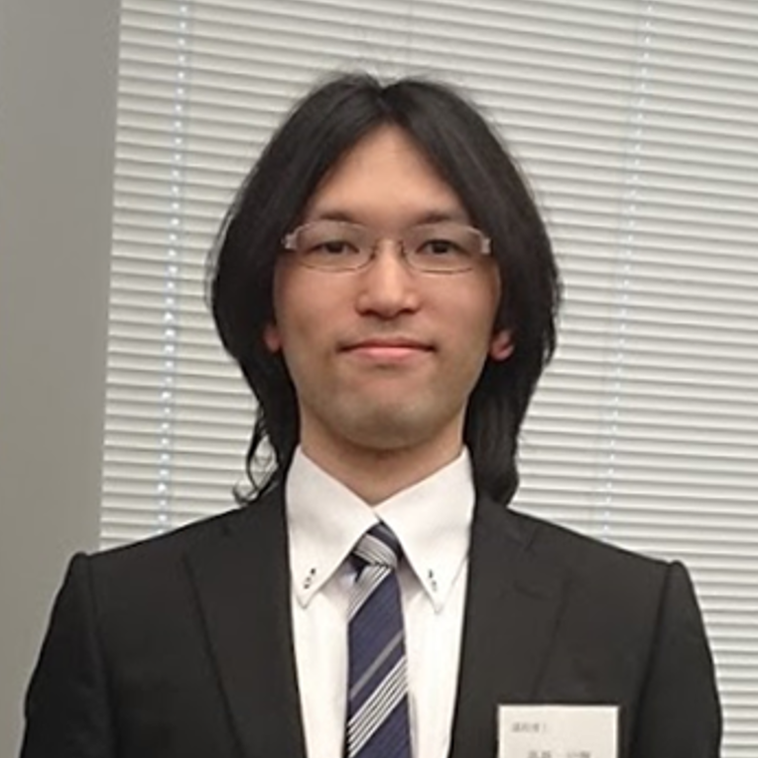
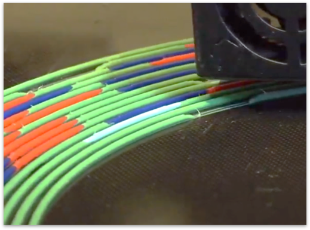
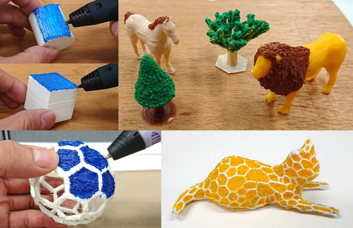

高橋 治輝 / Haruki TAKAHASHI
- 博士（工学） / Ph.D. in Engineering
- 立命館大学情報理工学部 講師 / Lecturer at College of Information Science and Engineering, Ritsumeikan University
- haruki (at) fc.ritsumei.ac.jp
- Haruki Takahashi is a Lecturer at College of Information Science and Engineering, Ritsumeikan University (from 2023).
He received his Ph.D. in Engineering from Meiji University in 2017, advised by Homei Miyashita (Miyashita Laboratory).
His general research interests include human-computer interaction, digital fabrication and craft.
News
filling this using js
Projects
Programmable Filament (UIST2020 Paper)

3D Printed Fabric (UIST2019 Paper)

3D Pen + 3D Printer (CHI2019 Paper)

Expressive Fused Deposition Modeling (CHI2017 Paper)

Thickness Control Technique (UIST2016 Demo)

3D printing technique that controls the thickness of objects by increasing and decreasing the amount of material extruded during printing.
Using this technique, printers can dynamically control thickness and output thicker objects without a staircase effect.
ACM DL PDF VIDEO
Example Gcode - I recommend using a PLA filament.
ACM DL PDF VIDEO
Example Gcode - I recommend using a PLA filament.
Publications
International Conference (Oral)
- Himani Deshpande, Haruki Takahashi, and Jeeeun Kim. EscapeLoom: Fabricating New Affordances for Hand Weaving. In Proceedings of CHI2021.
- Haruki Takahashi, Parinya Punpongsanon and Jeeeun Kim. Programmable Filament: Printed Filaments for Multi-material 3D Printing. In Proceedings of UIST 2020.
- Shota Yamanaka, Hiroki Usuba, Haruki Takahashi, Homei Miyashita. Servo-Gaussian Model to Predict Success Rates in Manual Tracking: Path Steering and Pursuit of 1D Moving Target. In Proceedings of UIST 2020.
- Shota Yamanaka, Hiroki Usuba, Haruki Takahashi, Homei Miyashita. Peephole Steering: Speed Limitation Models for Steering Performance in Restricted View Sizes. In Proceedings of Graphics Interface 2020.
- Haruki Takahashi and Jeeeun Kim. 3D Printed Fabric: Techniques for Design and 3D Weaving Programmable Textiles. In Proceedings of UIST 2019, pp.43-51, 2019. PDF
- Haruki Takahashi and Jeeeun Kim. 3D Pen + 3D Printer: Exploring the Role of Humans and Fabrication Machines in Creative Making. In Proceedings of CHI 2019, No.295, 2019. PDF
- Jeeeun Kim, Clement Zheng, Haruki Takahashi, Mark D Gross, Daniel Ashbrook and Tom Yeh. Expanding & Supporting Workflows Towards Compositional 3D Printing. In Proceedings of Acm Symposium On Computational Fabrication (SCF’18), 2018.
- Haruki Takahashi and Homei Miyashita. Expressive Fused Deposition Modeling by Controlling Extruder Height and Extrusion Amount. In Proceedings of CHI 2017, pp.5065-5074, 2017. PDF
- Jeeeun Kim, Haruki Takahashi, Homei Miyashita, Michelle Annett and Tom Yeh. Machines as Co-Designers: A Fiction on the Future of Human-Fabrication Machine Interaction. In Proceedings of CHI 2017 Extended Abstracts, pp.790-805, 2017. PDF
- Haruki Takahashi and Homei Miyashita. An Interactive Fabrication System that Allows Users to Edit a 3D Model during 3D Printing. International Conference on Digital Fabrication 2016 (ICDF 2016). PDF
- Haruki Takahashi and Homei Miyashita. Animation Affecting the Operation Feeling on GUI Environment. International Symposium on Psychological vs Mathematical Approaches to Optical Illusion (Tokyo Symposium on Optical Illusion 2015).
International Conference (Demo, Poster)
- Kosei Kamata, Haruki Takahashi, and Koji Tsukada. Conductive, Ferromagnetic and Bendable 3D Printed Hair for Designing Interactive Objects. In Adjunct Proc. of UIST 2023.
- Haruki Takahashi and Jeeeun Kim. Designing a Hairy Haptic Display using 3D Printed Hairs and Perforated Plates. In Adjunct Proc. of UIST 2022.
- Qian Lu, Aryabhat Darnal, Haruki Takahashi, Anastasia Hanifah Muliana, and Jeeeun Kim. User-Centered Property Adjustment with Programmable Filament. In Proceedings of CHI 2022 Extended Abstracts.
- Haruki Takahashi and Homei Miyashita. Thickness Control Technique for Printing Tactile Sheets with Fused Deposition Modeling. In Adjunct Proc. of UIST 2016, pp.51-53. PDF
論文誌
- 高橋 治輝. 熱溶解積層方式3Dプリンタの造形手法を用いた「たんぽぽの綿毛」の制作. 芸術科学会論文誌. Vol.18, No.2, pp.87-96, 2019.
- 高橋 治輝, 宮下 芳明. 熱溶解積層方式3Dプリンタの造形工程の観察と介入を前提とした一時停止命令の再設計. ヒューマンインタフェース学会論文誌. Vol.20, No.1, 2018.
- 高橋 治輝, 宮下 芳明. Road単位の造形に着目した熱溶解積層方式3Dプリンタでの質感表現. 情報処理学会論文誌. Vol. 59, No. 2, 2018.
- 高橋 治輝, 宮下 芳明. 水平面の造形を用いて3Dプリンタの造形領域を拡張する手法の提案. ヒューマンインタフェース学会論文誌. Vol.19, No.1, pp.77-86, 2017. PDF
- 高橋 治輝, 宮下 芳明. オーバーエクストルージョンを用いた熱溶解積層方式3Dプリンタのための造形手法. 芸術科学会論文誌. Vol. 15, No. 5, pp. 194-207, 2016. PDF
国内会議
- 鎌田 航誠, 高橋 治輝, 塚田 浩二. 導電性樹脂・磁鉄樹脂を用いた毛構造の3Dプリントと応用. インタラクション2023論文集, 2023.
- 高橋 治輝. 3Dプリントした毛を用いた触覚ディスプレイの提案. 日本ソフトウェア科学会 WISS2021, 2021.
- 高橋 治輝. 3DモデルへのGcode埋め込みによる一元管理とその利用例, インタラクション2019論文集, 2019．
- 高橋 治輝. 3D Printer-assisted 3D Drawing: 3Dペンと3Dプリンタを組み合わせた創作環境の提案, 日本ソフトウェア科学会 WISS2018, 2018. (ロングティザー)
- 野崎 玲那, 高橋 治輝, 宮下 芳明. Felting Deposition Modeling: フェルティングニードルを用いた羊毛フェルト3Dプリンタ, 日本ソフトウェア科学会 WISS2018, 2018.
- 高橋治輝，宮下芳明． 熱溶解積層方式3Dプリンタを用いた表現と造形手法のデザインのためのパラメータ探索手法，インタラクション2018論文集，pp.135-144，2018．
- 高橋 治輝, 宮下 芳明. ブリッジ構造と樹脂の引き伸ばしを用いた高密度な毛構造の造形手法. 日本ソフトウェア科学会 WISS2017, 2017.
- 高橋 治輝, 宮下 芳明. 造形高さと樹脂量の設定による熱溶解積層方式3Dプリンタの表現力拡張．日本ソフトウェア科学会 WISS2016, pp.193-198. PDF
- 高橋 治輝, 宮下 芳明. 3Dプリンタの造形中もモデリング可能なインタラクティブ・ファブリケーション. 日本ソフトウェア科学会 WISS2015, pp.13-15，2015. PDF
- 高橋 治輝, 宮下 芳明. HoverPen: 交わらない線が描けるペンで実現可能な表現. 日本ソフトウェア科学会 WISS2014, pp.173-174, 2014. PDF
- 高橋 治輝, 宮下 芳明. 楽譜断片から始めるドラム練習. 情報処理学会 インタラクション2013, pp. 756-761, 2013. PDF
- 太田 佳敬, 高橋 治輝, 中橋 雅弘, 宮下 芳明. 音響マクロ : マウス操作の音響記録・再生・配信と編集. 情報処理学会 ヒューマンコンピュータインタラクション研究会報告, Vol.2013-HCI-151, pp. 1-2, 2013. PDF
- 高橋 治輝, 宮下 芳明. 裁断された譜面を用いたドラム練習支援, 情報処理学会 エンタテイメントコンピューティング2012, pp.337-340, 2012.
講演
- 2020年9月 3D Printed Fabric: FDM方式3Dプリンタを用いた布の造形手法, トップコンファレンスセッション2-2 ユーザインタフェース, FIT2020.
- 2020年1月 3Dプリンタの造形手法研究とラピッドプロトタイピング, センサ工学, 公立はこだて未来大学（北海道）.
- 2017年9月 CHI2017採択論文紹介, 世界を目指せ！ ― トップコンファレンス採択論文紹介, 第22回バーチャルリアリティ学会大会（徳島）.
表彰
- 2023年3月 インタラクション2023 インタラクティブ発表賞（PC推薦）.
- 2021年12月 WISS2021 対話発表賞（PC推薦）.
- 2020年11月 第18回 芸術科学会論文賞 受賞ニュース（明治大学）.
- 2020年10月 UIST2020 SIGCHI Best of UIST Honorable Mention Award.
- 2017年12月 WISS2017 対話発表賞.
- 2017年11月 第15回 芸術科学会論文賞 受賞ニュース（明治大学）.
助成
- 2020年4月- 塚田浩二（研究代表者）,高橋治輝（研究分担者）, 「実世界デバイスを拡張するファンクショナル・テクスチャ」
- 2017年, 明治大学「大学院生海外研究プログラム」
略歴
- 2009年3月 茨城県立下妻第一高等学校 卒業
- 2009年4月 明治大学 理工学部 情報科学科 入学
- 2013年3月 明治大学 理工学部 情報科学科 卒業
- 2013年4月 明治大学大学院 理工学研究科 新領域創造専攻 博士前期課程 入学
- 2015年3月 明治大学大学院 理工学研究科 新領域創造専攻 博士前期課程 修了
- 2015年4月 明治大学大学院 理工学研究科 新領域創造専攻 博士後期課程 入学
- 2017年4月 明治大学大学院 先端数理科学研究科 先端メディアサイエンス専攻 博士後期課程 編入学
- 2018年3月 明治大学大学院 先端数理科学研究科 先端メディアサイエンス専攻 博士後期課程 修了，博士（工学）
- 2018年4月 明治大学 総合数理学部 助教
- 2023年4月 立命館大学 情報理工学部 講師
職歴
- 明治大学理工学部 助手 （2015年4月 - 2017年3月）
- 明治大学総合数理学部 助手 （2017年4月 - 2018年3月）
- 明治大学総合数理学部 助教 （2018年4月 - 2023年3月）
- 立命館大学情報理工学部 講師 （2023年4月 - 現在）
教育
- 2015-2017年度（明治大学，助手）
- 2018年度（明治大学FMS，助教）
- 情報技術概論，アルゴリズム基礎，プログラミング演習Ⅰ・Ⅱ
- サマーセミナー, 「3Dモデリング&3Dプリンタ講座」, 2018年8月6日．
- 2019年度（明治大学FMS，助教）
- 情報技術概論，アルゴリズム基礎，プログラミング演習Ⅰ・Ⅱ
- サマーセミナー, 「3Dモデリング&3Dプリンタ講座」, 2019年8月5日
- 2020年度（明治大学FMS，助教）
- 情報技術概論，アルゴリズム基礎，プログラミング演習Ⅰ・Ⅱ
- サマーセミナー, 「3Dモデリング&3Dプリンタ講座」, 2020年8月19日．
- 2021年度（明治大学FMS，助教）
- 情報技術概論，アルゴリズム基礎，プログラミング演習Ⅰ・Ⅱ
- サマーセミナー, 「3Dモデリング&3Dプリンタ講座」．
- 2022年度（明治大学FMS，助教）
- 情報技術概論，アルゴリズム基礎，プログラミング演習Ⅰ・Ⅱ
- サマーセミナー, 「3Dモデリング&3Dプリンタ講座」．
所属学会
- 情報処理学会 ヒューマンコンピュータインタラクション研究会（HCI研究会） 正会員
- ACM SIGCHI 正会員
- 芸術科学会 正会員
メディア掲載
- 日本物流新聞（記事掲載）, 「3Dプリンタで変わるデザイン，フサフサの『毛』を造形」, 2018年2月10日．
- 明治大学(プレスリリース), 「3Dプリンタの新たな造形方法を開発 ～高密度な「毛」を3Dプリント～」, 2017年12月5日．
- ズームイン!！サタデー, フューチャリスタ, 宮下芳明, 2017年1月28日. (僕の研究も紹介して頂きました)
- WBS, トレンドたまご, 「質感制御のための造形手法」, 2016年10月24日．
- 明治大学(プレスリリース), 「3Dプリンタの新たな造形方法を開発 ～滑らかな手触りを3Dプリント～」, 2016年10月18日．
- 日経産業新聞（記事掲載）, 「端末 たたいて操作 明大、ソフト開発 部位認識、ボタン代替」, 2014年10月17日.
- ニュースサイト：fabcross，
マイナビニュース，
3DP id.arts
- ニュースサイト：www.3Ders.org
その他
- vvvvと私の博士課程, vvvv Advent Calendar 2017, 2017年12月20日．
- 第22回 vvvv オフ会（vvvv to 3D printer） 主催, 2017年6月17日．
- vvvvで3Dプリンタを動かす, vvvv Advent Calendar 2015, 2015年12月21日．
- 大学でvvvv勉強会を開催したお話, vvvv Advent Calendar 2015, 2015年12月17日．